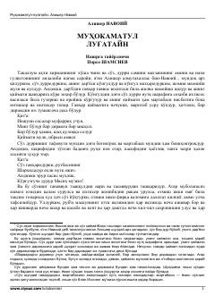

MLAlisher Navoiyning turkiy tilning boyligini himoya qiluvchi mashhur tilshunoslik asari.
Ushbu asar Alisher Navoiyning tilshunoslikka oid mashhur asari bo'lib, unda turkiy va forsiy tillarning o'ziga xos xususiyatlari qiyosiy tahlil qilinadi. Muallif turkiy tilning boyligi va ifodaviyligini ilmiy hamda badiiy dalillar bilan asoslab beradi.